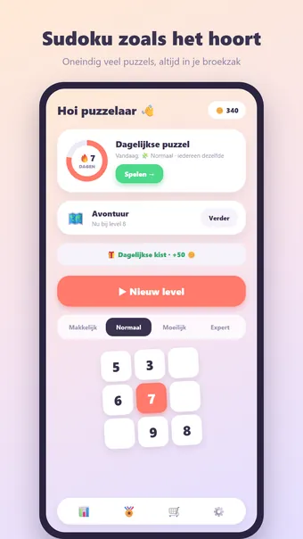
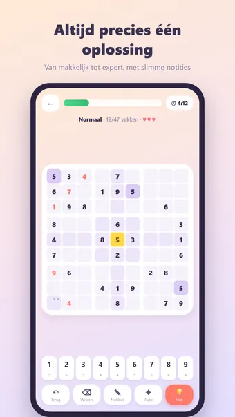
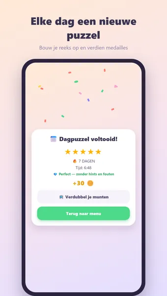

Over Sudoku
Speel Sudoku, de klassieke cijferpuzzel — altijd en overal, gewoon offline. Vul het raster zo dat elk cijfer 1–9 precies één keer voorkomt in elke rij, kolom en elk 3×3-blok!
Zo speel je
Elke puzzel wordt vers gegenereerd en heeft gegarandeerd precies één oplossing. Tik op een vak, kies een cijfer en gebruik potloodnotities voor kandidaten. Fouten worden meteen zichtbaar; bij drie fouten is het potje voorbij.
Vier moeilijkheidsgraden
- Makkelijk: veel ingevulde cijfers, ideaal voor tussendoor
- Normaal: de klassieke krantenpuzzel
- Moeilijk: voor de geoefende oplosser
- Expert: minimale hulp — voor de echte puzzelaar
Avontuur-modus
Speel je door honderden genummerde levels die steeds moeilijker worden. Reis door kleurrijke werelden, verdien op elk level een medaille en pak mijlpaalbeloningen onderweg.
Dagelijkse puzzel
Elke dag één unieke sudoku, voor iedereen hetzelfde. Verdien een medaille van 1 tot 5 sterren en bouw een reeks op: 3, 7, 30 of zelfs 100 dagen op rij!
Munten en thema's
Verdien munten met elk voltooid potje en geef ze uit aan hints of nieuwe uiterlijken: Bos, Ruimte, Neon, Hout, Marmer, Kerst en Halloween. Alleen cosmetisch — geen pay-to-win.
En verder
- Hints via munten
- Slimme notities die zichzelf opruimen
- 23 prestaties, van je eerste puzzel tot honderd dagen op rij
- Uitgebreide statistieken: snelste tijd, foutloze puzzels en meer
- Zen-modus: zet de timer uit en puzzel ontspannen
- Geluid en trilfeedback (uit te zetten in de instellingen)
- Beschikbaar in het Nederlands, Engels, Spaans, Duits, Frans en Portugees
Gratis te spelen. De app toont advertenties, die je met één optionele aankoop kunt verwijderen; een account is niet nodig.
Veelgestelde vragen
Is Sudoku gratis?
Ja. Sudoku is gratis te downloaden en te spelen. De app toont advertenties, die je met één optionele aankoop in de app kunt verwijderen.
Werkt Sudoku offline?
Ja. Sudoku werkt zonder internetverbinding, dus je speelt ook in het vliegtuig, in de trein of overal zonder wifi.
Heb ik een account nodig om Sudoku te spelen?
Nee. Je hoeft je niet te registreren of in te loggen: open de app en speel. Je spellen en instellingen blijven op je eigen toestel.
Hoe speel je Sudoku?
Elke puzzel wordt vers gegenereerd en heeft gegarandeerd precies één oplossing. Tik op een vak, kies een cijfer en gebruik potloodnotities voor kandidaten. Fouten worden meteen zichtbaar; bij drie fouten is het potje voorbij.
Is er elke dag een nieuwe uitdaging?
Elke dag één unieke sudoku, voor iedereen hetzelfde. Verdien een medaille van 1 tot 5 sterren en bouw een reeks op: 3, 7, 30 of zelfs 100 dagen op rij!
Waar kan ik Sudoku downloaden?
Sudoku is voor Android-telefoons en -tablets te downloaden via Google Play. Gebruik de knop bovenaan deze pagina.
Meer spellen die je leuk vindt
Nonogram
De klassieke nonogram. Oneindig veel puzzels, elke dag een nieuwe uitdaging.
Google PlayMijnenveger
De klassieke mijnenveger. Oneindig veel velden, elke dag een nieuwe uitdaging.
Google PlayBlokpuzzel
Leg het bord precies vol. Altijd oplosbaar, elke dag een nieuwe uitdaging.
Google PlayJuridisch
Hieronder vind je de juridische documenten die voor Sudoku gelden.
Contact
Vragen, feedback of een privacyverzoek? Mail naar joostmuijsenberg.dev@gmail.com.